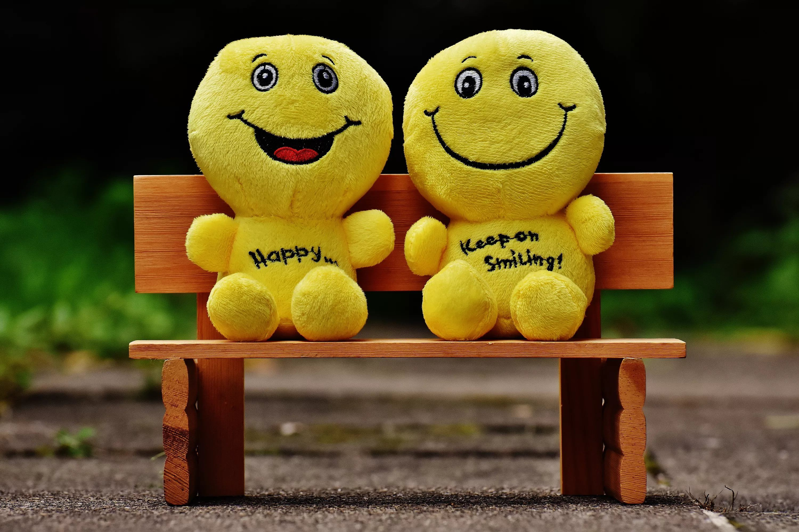

Обо мне
Моё имя Владислав. Я LFDYOUNG.
Мои НЕлюбимые предметы
- Бухгалтерский учёт
- Информационная поддержка
- Физкультура
Мои любимые фильмы, книги, телепередачи на сегодня
- Гнев человеческий (КиноПоиск)
- Фрэнк Герберт. Дюна. (ЧитайГород)
- Плохие спортивные новости (Ютюб)
Моё Счастье и Грусть
Счастье: 
Несчастье:
 9
9